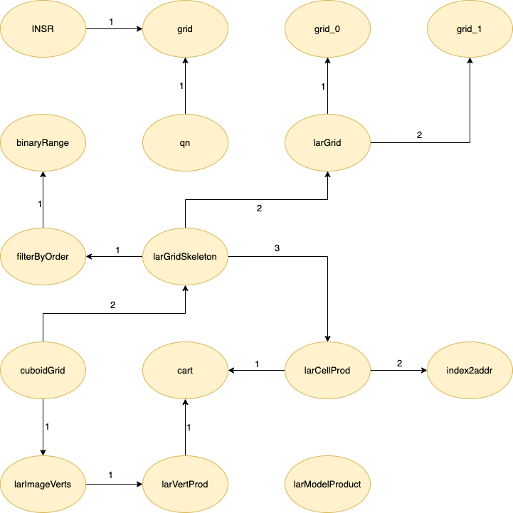
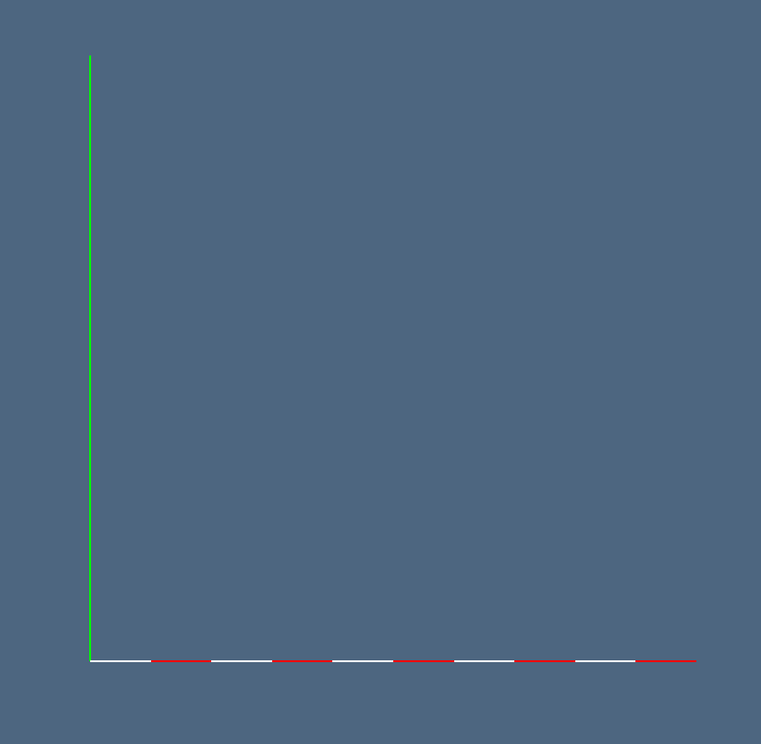

Studio preliminare: LAR cuboids & simplices
Nel progetto numero 1 - LAR cuboids & simplices sono stati analizzati i due file sorgenti largrid.jl e simplexn.jl presenti all'interno della libreria Lar (Linear Algebraic Rapresentation).
Autori
- Alessandro Dell'Oste: 502589
- Maurizio Brini: 505195
- Manuel Granchelli: 512406
Repo GitHub
https://github.com/adelloste/LinearAlgebraicRepresentation.jl
Indice
Simplexn.jl
Il primo dei due file analizzati simplexn.jl contiene un insieme di funzioni per generare un complesso cellulare di simpliciali. Un complesso simpliciale è un'aggregazione ordinata di simplessi, ossia un'unione di un certo numero di simplessi che si intersecano fra loro su facce comuni.
In particolare, nella libreria sono definite funzioni per la creazione efficiente di complessi simpliciali, generati da complessi simpliciali di dimensione parziale, la produzione di griglie simpliciali di qualsiasi dimensione e l'estrazione di faccette (cioè di (d-1)-facce) di complessi simpliciali di dimensione d. Le funzioni hanno complessità temporale lineare rispetto alla dimensione dell'output.
Entrando nel dettaglio, la generazione di simplessi è definita dalla funzione simplex che restituisce un simplesso n-dimensionale nel n-spazio del modello LAR (Figura (3)). Un modello LAR è definito da una coppia di (vertici, celle). All'interno di tale funzione viene effettuata una chiamata alla funzione simplexFacets, presente sempre all'interno del file simplexn.jl, che si occupa dell'estrazione delle (d-1)-faccette non orientate di simplessi d-dimensionali e restituisce la rappresentazione LAR di input della topologia di un complesso cellulare. È presente anche l'estrusione di simpliciali che è definita dalla funzione extrudeSimplicial che si occupa di generare il modello con vertici e celle di un'estrusione di un modello LAR (Figure (5), (6), (7)). Infine, la funzione simplexGrid si occupa della generazione di griglie simpliciali di qualsiasi dimensione e forma (Figura (4)).
Largrid.jl
Nel secondo file analizzato sono presenti funzioni per la generazione e prodotto di complessi multidimensionali. A seconda della dimensione dell'input possono generare complessi di dimensione completa (solidi) oppure complessi di dimensione parziale.
In particolare, vengono implementati complessi cellulari di dimensioni parziali (ad esempio 0 o 1-dimensionali) con coordinate intere, la cui generazione è definita nella funzione grid_0 che genera un complesso uniforme 0-dimensionale e nella funzione grid_1 per la generazione di un complesso uniforme 1-dimensionale. Per generare la rappresentazione LAR delle celle di complessi 0 o 1-dimensionali è definita anche la funzione larGrid che restituisce l'ordine del complesso di output.
La generazione di complessi cuboidali avviene tramite il prodotto cartesiano definito nella funzione larCellProd. Il prodotto di d complessi 1-dimensionali generano celle solide, mentre il prodotto di n complessi 0-dimensionali e (n-d) complessi 1-dimensionali generano celle non solide nello spazio n-dimensionale. La funzione per il prodotto cartesiano viene chiamata all'interno della funzione larGridSkeleton che produce lo schema d-dimensionale di una griglia cuboidale di dimensione data in input tramite il parametro shape. A sua volta, la funzione larGridSkeleton, è chiamata all'interno di un'altra principale funzione chiamata cuboidGrid che è definita come un generatore multidimensionale. Questa funzione può generare o una griglia d-dimensionale solida di d-cuboidi nello spazio d-dimensionale oppure l'array dello schema della forma a seconda del parametro passato in input. Infine, un'altra principale funzione presente all'interno di largrid.jl è larModelProduct che prende in input due modelli LAR e ne restituisce il loro prodotto cartesiano (Figura (9)).
Grafo dipendenze
 {#id-fig-1 .class width=40%}
{#id-fig-1 .class width=40%}
{#id-fig-2 .class width=60%}
Esempi
Nella seguente sezione sono riportati esempi, con i relativi output, di alcune funzioni dei due file sorgenti. Negli esempi viene utilizzata la libreria in Julia ViewerGL per la visualizzazione interattiva 3D dei dati geometrici.
Simplexn.jl
model = Lar.simplex(2)
" Output: ([0.0 1.0 0.0; 0.0 0.0 1.0], [[1, 2, 3]])"
GL.VIEW([ GL.GLGrid(model..., GL.COLORS[7],0.7),
GL.GLLines(model...), GL.GLFrame ]);\pagebreak Output:
{#id-fig-3 .class width=50% margin=auto}
grid_2d = Lar.simplexGrid([3,3])
" Output: ([0.0 1.0 ... 2.0 3.0; 0.0 0.0 ... 3.0 3.0],
[[1, 2, 5], [2, 5, 6], [2, 3, 6], [3, 6, 7], [3, 4, 7],
[4, 7, 8], [5, 6, 9], ... [12, 15, 16]])"
GL.VIEW([ GL.GLGrid(grid_2d..., GL.COLORS[7],0.7),
GL.GLLines(grid_2d...), GL.GLFrame ]);Output:
{#id-fig-4 .class width=50% margin=auto}
VOID = [[]], [[1]]
"Output: (Vector{Any}[[]], [[1]])"
model = Lar.extrudeSimplicial( VOID, ones(10) )
"Output: ([0 1 ... 9 10], [[1, 2], [2, 3], [3, 4],
[4, 5], [5, 6], [6, 7], [7, 8], [8, 9], [9, 10], [10, 11]])"
GL.VIEW([ GL.GLGrid(model..., GL.COLORS[7], 0.5) ]);Output:
{#id-fig-5 .class width=50% margin=auto}
model = Lar.extrudeSimplicial( model, ones(10) )
" Output: ([0 1 ... 9 10; 0 0 ... 10 10], [[1, 2, 12],
[2, 12, 13], [2, 3, 13], [3, 13, 14], [3, 4, 14],
[4, 14, 15], [4, 5, 15], [5, 15, 16], [5, 6, 16],
[6, 16, 17] ... [105, 106, 116], [106, 116, 117],
[106, 107, 117], [107, 117, 118], [107, 108, 118],
[108, 118, 119], [108, 109, 119], [109, 119, 120],
[109, 110, 120], [110, 120, 121]])"
GL.VIEW([ GL.GLLines(model..., GL.COLORS[7]), GL.GLFrame ]);Output:
{#id-fig-6 .class width=50% margin=auto}
model = Lar.extrudeSimplicial( model, ones(10) )
" Output: ([0 1 ... 9 10; 0 0 ... 10 10; 0 0 ... 10 10],
[[1, 2, 12, 122], [2, 12, 122, 123], [12, 122, 123, 133],
[2, 12, 13, 123], ... [1199, 1209, 1210, 1320],
[1209, 1210, 1320, 1330], [1210, 1320, 1330, 1331]])"
GL.VIEW([ GL.GLGrid(model..., GL.COLORS[7], 0.5) ]);Output:
{#id-fig-7 .class width=50% margin=auto}
Largrid.jl
model1D = Lar.qn(5)([.1,-.1])
" Output: ([0.0 0.1 ... 0.8999999999999999 0.9999999999999999],
[[1, 2], [3, 4], [5, 6], [7, 8], [9, 10]])"
GL.VIEW([ GL.GLFrame2, GL.GLGrid( model1D...,GL.COLORS[1],1 ) ]);\pagebreak Output:
{#id-fig-8 .class width=50% margin=auto}
model2D = Lar.larModelProduct([ model1D, model1D ])
" Output: ([0.0 0.0 ... 0.9999999999999999 0.9999999999999999;
0.0 0.1 ... 0.8999999999999999 0.9999999999999999],
[[1, 2, 12, 13], [3, 4, 14, 15], [5, 6, 16, 17],
[7, 8, 18, 19], [9, 10, 20, 21], [23, 24, 34, 35],
[25, 26, 36, 37], ... [97, 98, 108, 109]])"
GL.VIEW([ GL.GLFrame2, GL.GLGrid( model2D...,GL.COLORS[1],1 ) ]);Output:
{#id-fig-9 .class width=50%}
model3D = Lar.INSR(Lar.larModelProduct)([model1D, model1D, model1D])
" Output: ([0.0 0.0 ... 0.9999999999999999 0.9999999999999999;
0.0 0.0 ... 0.9999999999999999 0.9999999999999999;
0.0 0.1 ... 0.8999999999999999 0.9999999999999999],
[[1, 2, 12, 13, 122, 123, 133, 134],
[3, 4, 14, 15, 124, 125, 135, 136],
[5, 6, 16, 17, 126, 127, 137, 138],
[7, 8, 18, 19, 128, 129, 139, 140], ...
[1063, 1064, 1074, 1075, 1184, 1185, 1195, 1196],
[1065, 1066, 1076, 1077, 1186, 1187, 1197, 1198]])"
GL.VIEW([ GL.GLFrame, GL.GLPol( model3D...,GL.COLORS[1],1 ) ]);Output:
{#id-fig-10 .class width=50%}